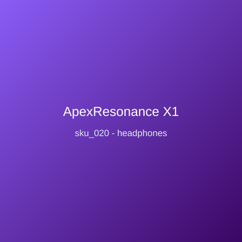

Price: ₹12,999
Reference-grade planar-magnetic over-ear headphones with 98mm drivers, 15Hz-50kHz response, and low-distortion double-sided magnet arrays. Open-back design images widely; detachable balanced 2.5mm and 3.5mm cables; magnesium alloy frame; velour and protein-leather pads included; 320g without cable; scales beautifully with desktop amps.